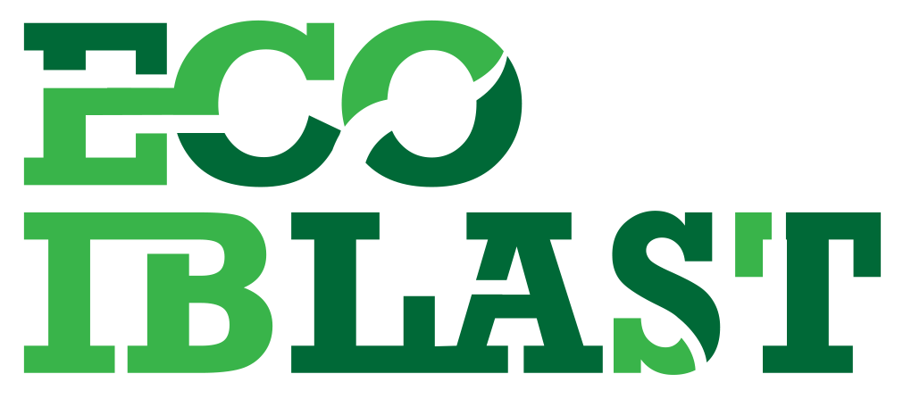
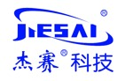
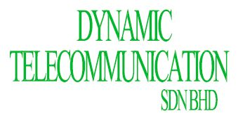
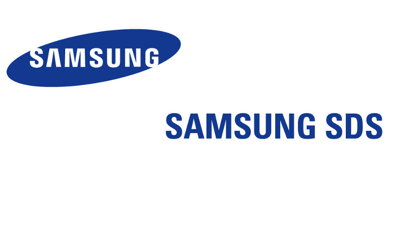
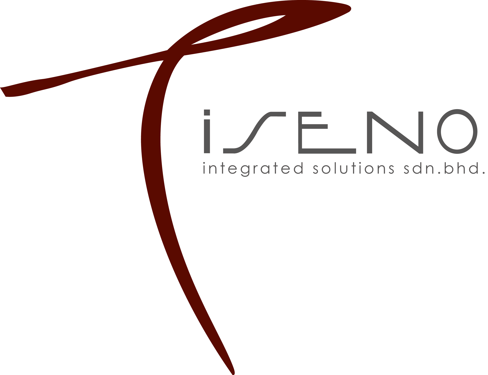

Professional Experience

Project Manager
Eco Iblast Sdn Bhd | Kepong, KL (Aug 2022 - Present)
- Responsible to plan, lead and manage all aspects of a project in order to achieve the project objectives within an agreed period of time, cost, performance,ensuring good profitability and quality in program level.
- Manage tracking, reporting and progress update to stakeholders.
- Perform and prepare quotation, technical documentation, site commissioning when necessary.

Project Manager
GCI Science & Technology (M) Sdn Bhd | Bangsar, KL (Jan 2022 - July 2022)
- Assigned to 5G DNB-Ericsson project for TI and Microwave.
- Responsible to plan, lead and manage all aspects of a project in order to achieve the project objectives within an agreed period of time, cost, performance, ensuring good profitability and quality in program level.
- Manage tracking, reporting and progress update/presentation to management and stakeholders.
- Acts as primary project interface or contact point to the customer, ensuring good customer satisfaction and develop good customer relationship.

Project Manager
Dynamic Telecommunication Sdn Bhd | Shah Alam, Selangor (Jan 2018 - Dec 2022)
- Assigned to Maxis Network Roll-out involving upgrade, decommission, and newsites project.
- Responsible to plan, monitor and control of all aspects of a project inorder to achieve the project objectives within an agreed period of time, cost andperformance.
- Responsible for overall project implementation and shall receive acknowledgment to start work from Contractors/Supplier and to notify the schedule to operation before work begin.
- Carry out inspection and observe on allwork carried in order to ensure conformity with the contract documents.
- Validate the actual implementation as per the design specification endorse by project planner.
Network Surveillance Engineer
Universal Cellular Engineering Services Sdn Bhd | Cheras, KL (Aug 2016 - Dec 2017)
- Involved in managing day to day surveillance activity in network operation center.
- Managing and maintaining network monitoring system in the project besides fault handling and escalation.
- Support network performance analysis and fault reporting, as well as providing daily and weekly reports as requested.
- Liaise with Project Engineers and contractors whenever necessary to ensure fault resolving within SLA.
- Performed first level troubleshooting and implement configuration data changes for network resources.

LTE System Engineer
Samsung SDS (M) Asia Pacific PTE LTD | Sentul, KL (Nov 2015 - July 2016)
- Assigned to YES 4G (YTLC – Samsung) project.
- Responsible to perform site integration to ensure maximum services availability and performance.
- Managing and maintaining LTE monitoring system in the project besides fault handling and escalation.
- Assist RF Engineers and Field Engineers such as back-haul and LTE acceptance test aside of supporting whenever necessary.
- Reporting to the project specialist as well as providing statistic reports daily and weekly.

IT Trainee
Tiseno Integrated Solutions Sdn Bhd | Petaling Jaya, Selangor (Jan 2015 - Oct 2015)
- Develop and implement a web application for internal use of company using PHP programming language.
- Perform application testing (web, Android, and iOS) to make sure meet as per user requirement.
- Create and enhance test cases to make sure the test cases keep updated.